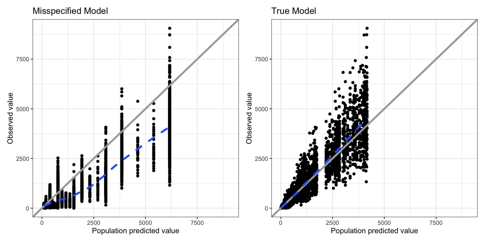
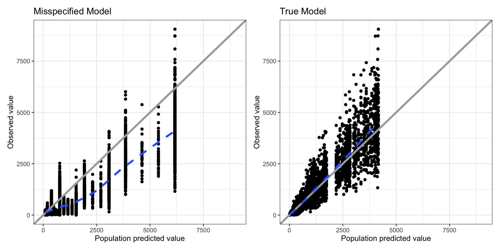
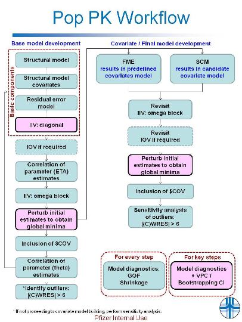

expand for full code

2024-10-23
Goodness-of-Fit (GOF) measures the agreement between a model and the observed data in population PK modeling. It’s crucial for validating model performance and assumptions.
Graphical methods provide insight into: - Structural model correctness - Residual and random variability assessments.

Interpretation: Ideally, data should scatter uniformly around the line of identity. Systematic deviations could indicate structural model misspecifications
Conditional Weighted Residuals (CWRES) - CWRES are calculated based on the conditional distribution of observations, taking into account both inter-individual and intra-individual variability. They are computed as:
\(\text{CWRES}_i = \frac{y_i - \hat{y}_{i,\text{cond}}}{\text{Var}(y_i \mid \hat{\theta}, \hat{\eta}_i)}\)
Where:
Thus, CWRES adjusts for the uncertainty in the model predictions and are normalized by the conditional variance.
Individual Weighted Residuals (IWRES)
IWRES are simpler and involve the difference between the observed data and the individual predictions, scaled by the model’s prediction error for the individual. Mathematically, they are expressed as:
\(\ \text{IWRES}_i = \frac{y_i - \hat{y}_{i,\text{ind}}}{\sigma}\)
Where:
IWRES do not account for the uncertainty in the model’s population parameters, unlike CWRES. They simply measure the discrepancy between the data and the individual prediction, scaled by the residual error.
Summary of Differences
# Plot Eta Histograms and EBE correlations
p <- true_fit %>%
select(ID,eta.Km, eta.CL, eta.V1) %>%
distinct() %>%
pmplots::eta_hist(, x = c("eta.Km","eta.CL", "eta.V1"))
p[[1]] + geom_vline(aes(xintercept = 0),color = "red", linetype = 'dashed') +
p[[2]] + geom_vline(aes(xintercept = 0), color = "red", linetype = 'dashed') +
p[[3]] + geom_vline(aes(xintercept = 0), color = "red", linetype = 'dashed')Looking at the shrinkage:
# Generate individual plots
plot_ind_misspecified <- data %>%
filter(MDV == 0) %>%
ggplot(aes(TIME, DV)) +
geom_point(size = 2.5, alpha = 0.5 ) +
#geom_line(aes(group = ID)) +
geom_line(data = misspecified_fit ,aes(x= TIME, y= IPRED, group=ID), color = "#167fc9", alpha= 0.6) +
geom_line(data = misspecified_fit,aes(x= TIME, y= PRED, group=ID), color = "#167fc9", linetype = "dashed", alpha= 0.6) +
geom_vline(data = data %>% filter(EVID ==1 ), aes(xintercept = TIME), linetype = "dashed", color = "grey") +
#ggrepel::geom_label_repel(data=misspecified_fit %>%
# filter(abs(CWRES)>=3) %>%
# mutate(ID = as.numeric(as.character(ID))),
# aes(label = round(abs(CWRES),2)),
# box.padding = 0.35,
# point.padding = 0.8,
# segment.color = 'grey50') +
labs(title="Misspecified Model") +
ggforce::facet_wrap_paginate(~ID, scales = "free", ncol = 3, nrow = 3)
npages = ggforce::n_pages(plot_ind_misspecified)
plot_ind_true <- data %>%
filter(MDV == 0) %>%
ggplot(aes(TIME, DV)) +
geom_point(size = 2.5, alpha = 0.7 ) +
#geom_line(aes(group = ID)) +
geom_line(data = true_fit ,aes(x= TIME, y= IPRED, group=ID), color = "#167fc9", alpha= 0.6) +
geom_line(data = true_fit,aes(x= TIME, y= PRED, group=ID), color = "#167fc9", linetype = "dashed", alpha= 0.6) +
geom_vline(data = data %>% filter(EVID ==1 ), aes(xintercept = TIME), linetype = "dashed", color = "grey") +
#ggrepel::geom_label_repel(data=true_fit %>%
# filter(abs(CWRES)>=3) %>%
# mutate(ID = as.numeric(as.character(ID))),
# aes(label = round(abs(CWRES),2)),
# box.padding = 0.35,
# point.padding = 0.8,
# segment.color = 'grey50') +
labs(title="True Model") +
ggforce::facet_wrap_paginate(~ID, scales = "free", ncol = 3, nrow = 3)
npages = ggforce::n_pages(plot_ind_true)
ggpubr::ggarrange(plot_ind_misspecified + facet_wrap_paginate(~ID,scales = "free", ncol = 3, nrow = 3, page = 1),
plot_ind_true + facet_wrap_paginate(~ID,scales = "free", ncol = 3, nrow = 3, page = 1),
ncol = 2, nrow = 1)VPCs offer a powerful way to compare observed data percentiles to simulated data percentiles
Advantages: VPCs account for variability and help visualize prediction intervals
Discrepancies between observed percentiles and predicted intervals highlight potential misspecifications in structural or residual models
Prediction-corrected VPCs (pcVPCs) are another common version of VPCs that adjust for study design variability (e.g., different dosing regimens or covariates)
In Prediction-Corrected Visual Predictive Checks (pcVPCs), the observed and simulated concentrations are adjusted to account for variability due to study design (e.g., different dosing regimens or covariates). This correction is based on the ratio of the median model-predicted concentration for a typical individual in a specific time bin to the individual-specific predicted concentration for each observation.
The prediction-corrected concentration \(C_{\text{pc},i,j}\) for individual \(i\) at time point \(j\) is calculated as:
\[ C_{\text{pc},i,j} = C_{i,j} \times \frac{PRED_{\text{median}, j_{\text{bin}}}}{PRED_{i,j}} \]
Where:
Purpose of the Correction:
By using the median predicted concentration for each time bin \(j_{\text{bin}}\), this approach normalizes observed and simulated data relative to a typical individual. This ensures that variability in dosing, covariates, or sampling schedules across individuals is appropriately corrected, making it easier to detect model misspecifications without the confounding effects of study design variability.
Interpretation: Does the observed data distribution fall within the predicted intervals and confidence bands. Look for systematic trends that could indicate residual error misspecification
# Perform pcVPC
misspecified_vpc <- nlmixr2::vpcSim(misspecified_fit,n = 500, pred=T)
true_vpc <- nlmixr2::vpcSim(true_fit,n = 500, pred=T, keep = "DOSE")
misspecified_vpc_time <- misspecified_fit %>%
mutate(ID = as.numeric(as.character(ID))) %>%
left_join(
misspecified_vpc %>%
mutate(ID = as.numeric(as.character(id))) %>%
select(ID, TIME=time, pred) %>% distinct()
) %>%
tidyvpc::observed(x = TIME, y = DV) %>%
tidyvpc::simulated(misspecified_vpc, y = ipred) %>%
tidyvpc::binning(bin = "jenks", n_bins = 10) %>% # You can adjust the number of bins
tidyvpc::predcorrect(pred=pred) %>%
tidyvpc::vpcstats()
misspecified_vpc_tad <- misspecified_fit %>%
mutate(ID = as.numeric(as.character(ID))) %>%
left_join(
misspecified_vpc %>%
mutate(ID = as.numeric(as.character(id))) %>%
select(ID, TIME=time, pred) %>% distinct()
) %>%
tidyvpc::observed(x = tad, y = DV) %>%
tidyvpc::simulated(misspecified_vpc, y = ipred) %>%
tidyvpc::binning(bin = "jenks", n_bins = 10) %>% # You can adjust the number of bins
tidyvpc::predcorrect(pred=pred) %>%
tidyvpc::vpcstats()
true_vpc_time <- true_fit %>%
mutate(ID = as.numeric(as.character(ID))) %>%
left_join(
true_vpc %>%
mutate(ID = as.numeric(as.character(id))) %>%
select(ID, TIME=time, pred) %>% distinct()
) %>%
tidyvpc::observed(x = TIME, y = DV) %>%
tidyvpc::simulated(true_vpc, y = ipred) %>%
tidyvpc::binning(bin = "jenks", n_bins = 10) %>% # You can adjust the number of bins
tidyvpc::predcorrect(pred=pred) %>%
tidyvpc::vpcstats()
true_vpc_tad <- true_fit %>%
mutate(ID = as.numeric(as.character(ID))) %>%
left_join(
true_vpc %>%
mutate(ID = as.numeric(as.character(id))) %>%
select(ID, TIME=time, pred) %>% distinct()
) %>%
tidyvpc::observed(x = tad, y = DV) %>%
tidyvpc::simulated(true_vpc, y = ipred) %>%
tidyvpc::binning(bin = "jenks", n_bins = 10) %>% # You can adjust the number of bins
tidyvpc::predcorrect(pred=pred) %>%
tidyvpc::vpcstats()
a <- plot(misspecified_vpc_time) + ggtitle("Misspecified Model") + xlab("Time (hrs)")
b <- plot(misspecified_vpc_tad) + xlab("Time After Dose (hrs)")
c <- plot(true_vpc_time) + ggtitle("True Model") +xlab("Time (hrs)")
d <- plot(true_vpc_tad) + xlab("Time After Dose (hrs)")
ggpubr::ggarrange(a, c, b, d, ncol = 2, nrow = 2)Important to consider relevant stratification to fully evaluate model performance
true_vpc_strata <- data %>%
filter(MDV == 0 ) %>%
mutate(ID = as.numeric(as.character(ID))) %>%
left_join(
true_vpc %>%
mutate(ID = as.numeric(as.character(id))) %>%
select(ID, TIME=time, pred) %>% distinct()
) %>%
tidyvpc::observed(x = TIME, y = DV) %>%
tidyvpc::simulated(true_vpc, y = sim) %>%
tidyvpc::stratify(~DOSE) %>%
tidyvpc::binning(bin = "jenks", n_bins = 10) %>% # You can adjust the number of bins
tidyvpc::predcorrect(pred=pred) %>%
tidyvpc::vpcstats()
plot(true_vpc_strata) + ggtitle("True Model ~ Stratified by dose") + xlab("Time (hrs)")Pearl-Speaks-Nonmem (PSN) is another popular tool for VPCs, offering a range of features and customization options
PSN VPC Example
There are also options to perform your nonmem simulations outside of nonmem using tools like mrgsolve.
# Example code for running VPCs using mrgsolve and tidyvpc
# Sim for VPC
n.vpc <- 1000
df.sim.vpc <-
df.nm %>%
# Add parameter values
expand_grid(df.theta) %>%
# Duplicate all records n.vpc times
# Need to give different ID#
expand_grid(REP = 1:n.vpc) %>%
mutate(ID = NMID * n.vpc + REP) %>%
arrange(REP, NMID, TIME, EVID)
mrgsim.vpc <-
mod_pk %>%
carry_out(REP, NMID, AMT, EVID, WT, SEX) %>%
data_set(df.sim.vpc) %>%
omat(d.omat) %>%
mrgsim(tad = TRUE, recover = "PHASE")
df.mrgsim.vpc <-
as_tibble(mrgsim.vpc) %>%
filter(EVID == 0)
# Sim PRED (required for tidyvpc)
df.sim.pred.for.vpc <-
df.nm %>%
# Add parameter values
expand_grid(df.theta) %>%
mutate(ID = NMID)
mrgsim.pred.for.vpc <-
mod_pk %>%
carry_out(NMID, AMT, EVID) %>%
data_set(df.sim.pred.for.vpc) %>%
zero_re() %>%
mrgsim(tad = TRUE, recover = "PHASE")
df.tad.pred <-
mrgsim.pred.for.vpc %>%
filter(EVID == 0) %>%
# Here IPRED is PRED as zero_re was used
select(tad, PRED = IPRED)
vpc <-
df.nm.obs %>%
bind_cols(df.tad.pred) %>%
mutate(PHASE = factor(PHASE, levels = c("SD", "MD"))) %>%
observed(x=TIME, y=DV) %>%
simulated(df.mrgsim.vpc, y=DV) %>%
stratify(~PHASE) %>%
# binning(bin = NTIM) %>%
binning(bin = "breaks", breaks = c(0, 1, 4, 5, 12, 24, 171, 185, 200)) %>%
vpcstats()
plot(vpc) +
xgx_scale_x_time_units(units_dataset = time_units_dataset,
units_plot = time_units_plot,
breaks = (0:40) * 6)MRGsolve + TidyVPC Example
Critical Remember to evaluate your model with respect to your clinical context and use case.
Avoid over-interpreting random variability as model issues, especially in sparse data settings
Need to interpret GOF plots with caution in high shrinkage situations (situation where VPCs maybe more useful)
GOF and VPC are critical tools in model evaluation, helping to identify structural and residual errors they should be performed throughout the model development process at critical steps.
Iterative Process: Model building is an iterative process. Be prepared to refine the model based on diagnostic outputs